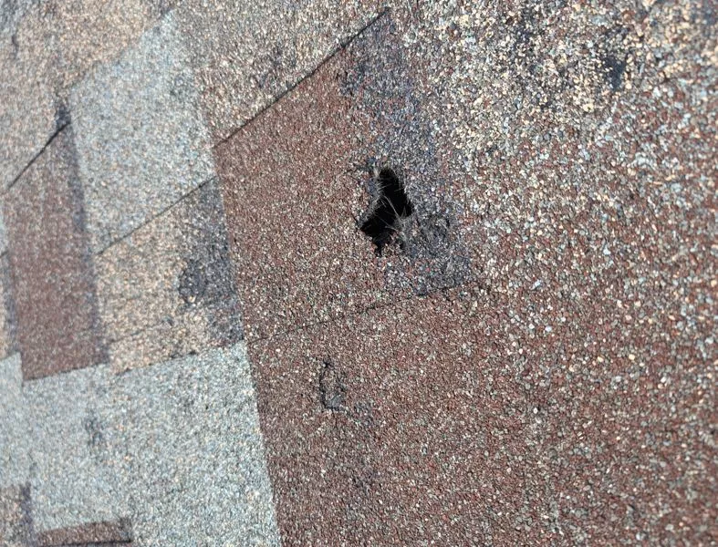

Expert Storm Damage Roof Repair Services
Central Texas is no stranger to severe weather events that can cause significant damage to your roof. At Verstera Roofing, we specialize in comprehensive hail and wind damage repair services that restore your roof to its pre-storm condition, preventing water infiltration and further structural damage.
Our storm damage specialists are trained to identify and repair all types of weather-related roof damage, from missing shingles and torn flashing to hail impacts and structural issues. We work quickly to assess the damage, secure your property, and implement lasting repairs that stand up to future storms.
We understand how stressful storm damage can be, which is why we offer complete support throughout the repair process, including thorough documentation and assistance with insurance claims to ensure you receive the coverage you deserve.
Request Storm Damage Assessment
Common Types of Storm Damage
Hail Damage
Hail strikes can crack shingles, dislodge granules, and cause impact marks that compromise your roof's weather resistance and reduce its lifespan.
Wind Damage
High winds can lift, curl, or completely tear off shingles, leaving your roof vulnerable to water infiltration and further deterioration.
Missing Shingles
Gaps in your roof's shingle coverage expose the underlayment to UV damage and create entry points for water, leading to leaks and interior damage.
Damaged Flashing
Storms can loosen or damage flashing around chimneys, vents, and roof valleys, creating potential leak points at these critical junctions.
Leaking Roof
Storm damage often results in water intrusion, which can lead to ceiling stains, mold growth, and structural deterioration if not addressed promptly.
Gutter Damage
Damaged or clogged gutters prevent proper water drainage, causing overflow that can damage your roof, fascia, soffits, and foundation.
Our Storm Damage Repair Process
1. Emergency Response
We provide rapid response to your storm damage call, offering emergency tarping and temporary repairs to prevent additional property damage.
2. Comprehensive Inspection
Our experts thoroughly assess all aspects of your roof, documenting visible and hidden damage to create a complete repair plan.
3. Detailed Documentation
We provide comprehensive damage reports with photos and measurements to support your insurance claim for maximum coverage.
4. Insurance Assistance
Our team works directly with your insurance adjuster, explaining technical damage issues and ensuring nothing is overlooked in your claim.
5. Expert Repairs
We implement lasting repairs using quality materials that match your existing roof in both appearance and performance.
6. Final Inspection
After completing repairs, we conduct a thorough inspection to verify all storm damage has been properly addressed.
Professional Insurance Claim Assistance

Navigating insurance claims for storm damage can be challenging. Verstera Roofing provides comprehensive support throughout the claims process to ensure you receive fair compensation for all covered damages.
Our Insurance Claim Support Includes:
- Free initial inspection and damage assessment
- Detailed documentation with photos and measurements
- Professional damage reports for submission to your insurance company
- Direct communication with your insurance adjuster
- Explanation of technical aspects of roof damage
- Assistance with paperwork and claim filing
- Review of insurance settlement to ensure all damage is covered
We have extensive experience working with all major insurance companies and understand their requirements for storm damage claims. Let our team help you maximize your coverage while minimizing your stress during this challenging time.
Storm Damage Repair Throughout Central Texas
Verstera Roofing provides fast, reliable hail and wind damage repair services across Central Texas, including:
- Guadalupe County: Seguin, New Braunfels, Schertz, Cibolo, Marion
- Bell County: Temple, Belton, Killeen, Harker Heights, Salado
- Travis County: Austin, Pflugerville, Lakeway, Bee Cave, Manor
- Bexar County: San Antonio, Live Oak, Universal City, Converse, Helotes
- Williamson County: Round Rock, Georgetown, Cedar Park, Leander, Hutto
- Comal County: New Braunfels, Bulverde, Garden Ridge, Spring Branch
We understand the specific weather challenges in each of these areas and provide customized repair solutions that address local climate conditions.
Storm Damage Repair Testimonials

Don't Wait to Address Storm Damage
Even minor storm damage can quickly escalate into major problems if left unrepaired. Water infiltration through damaged roofing can lead to mold, wood rot, and structural deterioration. Contact Verstera Roofing today for a thorough storm damage assessment and expert repairs that protect your property and restore your peace of mind.
Claim My Free Damage AssessmentStorm Damage Prevention Tips
Regular Roof Maintenance
Schedule professional roof inspections twice yearly (spring and fall) to identify and address potential vulnerabilities before storm season.
Keep Trees Trimmed
Regularly trim branches that hang over your roof to prevent them from breaking and damaging your roof during high winds.
Clean Gutters and Downspouts
Maintain clear gutters and downspouts to ensure proper water drainage during heavy rainfall, preventing water backup under shingles.
Check Attic Ventilation
Proper attic ventilation reduces heat and moisture buildup that can weaken roofing materials and make them more vulnerable to storm damage.
Consider Roof Reinforcement
For older roofs, consider having a professional install additional fasteners or hurricane straps to improve wind resistance.
Document Your Roof's Condition
Take photos of your roof in good condition annually to have comparison documentation if storm damage occurs.
Storm Damage Repair FAQs
How can I tell if my roof has hail damage?
Signs of hail damage include dented gutters and downspouts, damaged siding or window screens, missing granules on asphalt shingles, and bruising or dimpling on shingles. However, some hail damage can be difficult to spot from the ground. Our professional inspectors are trained to identify all forms of hail damage, including subtle impacts that might be missed by untrained observers.
Will my insurance cover roof storm damage?
Most homeowner's insurance policies cover sudden and accidental damage from wind, hail, and falling objects. However, coverage depends on your specific policy, the age of your roof, and whether the damage resulted from a covered peril. Our team will help document all damage for your claim and work with your insurance adjuster to maximize your coverage.
How quickly should I address storm damage to my roof?
Storm damage should be addressed as soon as possible. Even minor damage can allow water to infiltrate your roof system, leading to leaks, mold, and structural damage. Most insurance policies also require homeowners to take reasonable steps to prevent further damage after a storm, which includes prompt temporary repairs.
Can you work directly with my insurance company?
Yes, we regularly work directly with insurance companies throughout the claims process. Our experienced team will document all damage for your claim, meet with your adjuster during property inspections, review your insurance scope of work for accuracy, and ensure all storm-related damage is included in your settlement.
How long does storm damage repair take?
The timeline for storm damage repairs depends on the extent of damage, current weather conditions, material availability, and insurance approval timing. Emergency temporary repairs can typically be completed within 24-48 hours. Permanent repairs usually take 1-3 days for minor to moderate damage, while complete roof replacements generally take 3-5 days once materials are on site.